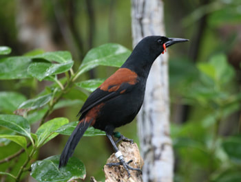

Ulva Island — Predator-Free Sanctuary
A world-class wildlife sanctuary where native birds thrive in a completely predator-free environment. Ancient forest, close encounters and the rare feeling of walking among New Zealand's most iconic birdlife.
Why it's special: rare native birds (tīeke, kākāriki, mōhua) + pristine forest + close wildlife encounters
→ Explore Ulva Island Guided Walks